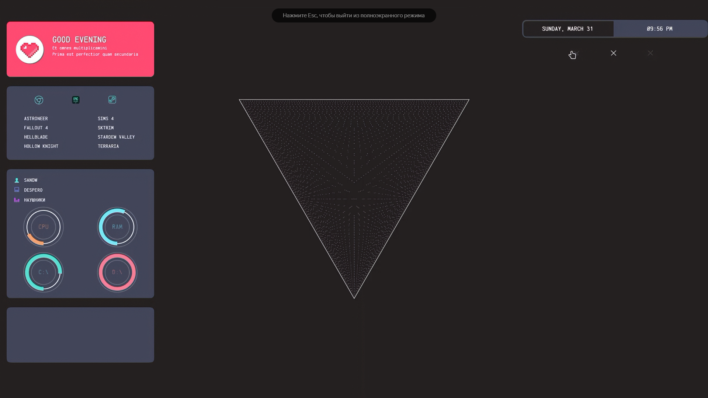
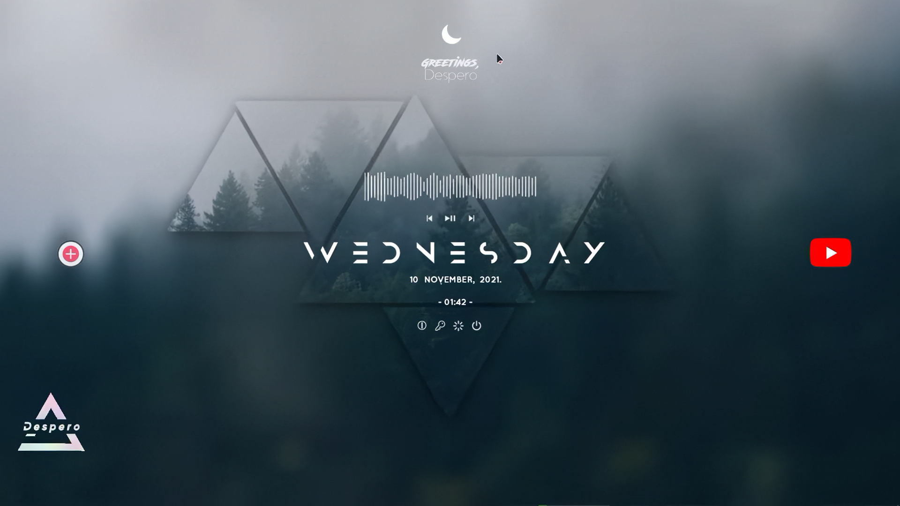
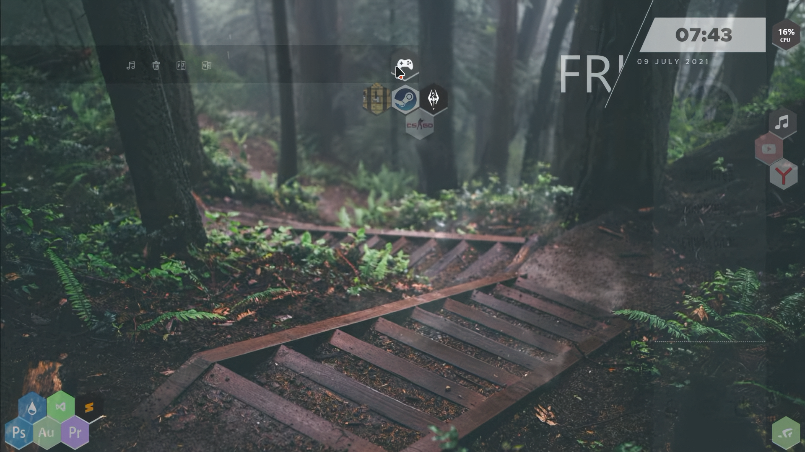
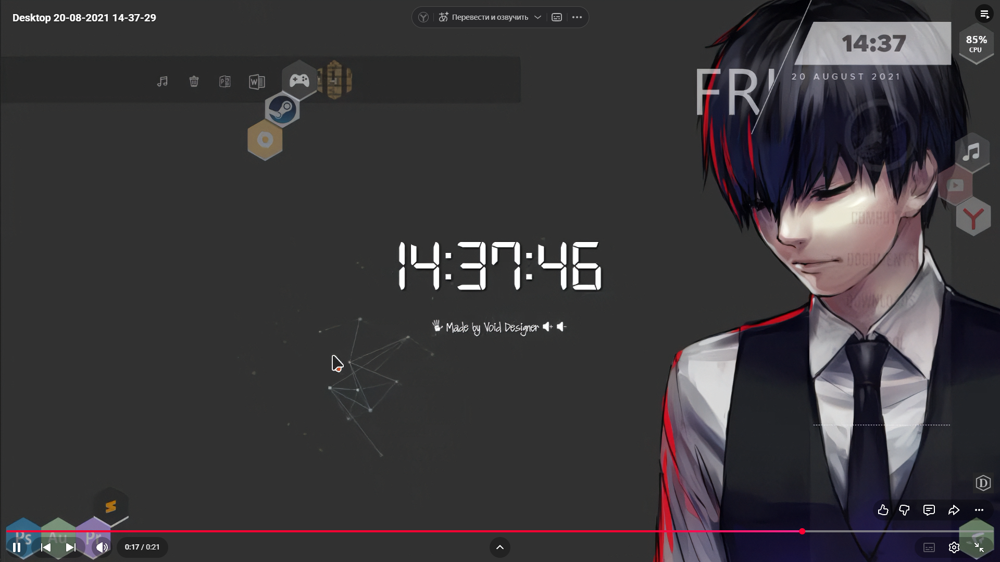
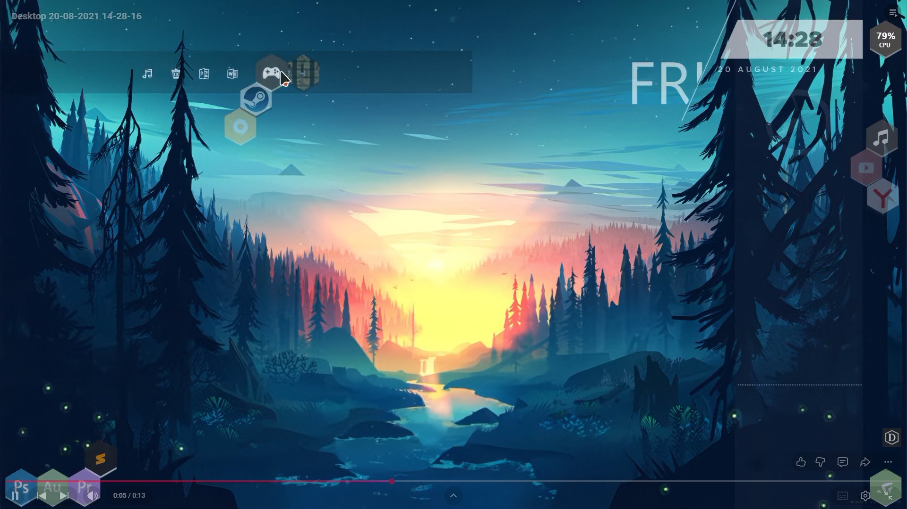
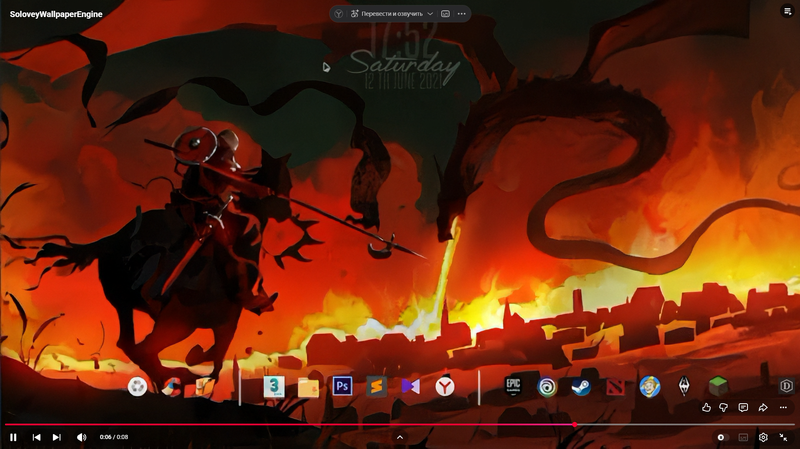

My Workspace: живой рабочий стол
Интерактивные интерфейсы на Rainmeter, Wallpaper Engine, Lua, JavaScript и canvas — рабочее место как лендинг.
Задача
Эксперимент без заказчика и ТЗ: показать своё рабочее место как лендинг. За этой страничкой стоит больше — годы создания интерактивных рабочих столов в Rainmeter и Wallpaper Engine.
Что сделано
- Свёрстана одностраничная презентация сетапа с фоновой композицией.
- Скины Rainmeter на Lua: системные метрики (CPU, RAM, диски), реальное время и дата, адаптивный режим день/ночь по системному времени — меняются текст, фон и иконки.
- Системные действия из интерфейса: питание, сон, блокировка, Log off с диалогом подтверждения и таймером.
- Многоуровневое меню-«бургер»: маленькая кнопка разворачивается в категории (Adobe Cloud, 3D, Office), а из них — в списки программ, с hover-подсветкой ветки.
- Particle network на JavaScript и canvas: частицы рождаются, живут, умирают и соединяются линиями, реагируя на курсор. Тот самый эффект — им теперь дышит фон этой страницы.
- Эффекты в Wallpaper Engine: фон-«флаг», параллакс за курсором, эквалайзер, живой пейзаж со сменой времени суток — рассвет, полдень, сумерки, светлячки.
- Подготовка графики: подбор артов, ретушь, размытия, цветокоррекция под композицию скинов.
- Заказной скин «Solovey»: арт — работа художницы-заказчицы, интерфейс, кнопки и панель — мои.
В движении
Многие элементы считываются только в движении: фон-«флаг», параллакс за курсором, эквалайзер и светлячки на скриншотах не живу́т.
Поэтому — видео: плейлист с работами в реальном времени.
Смотреть на YouTubeГалерея
Вариант






Итог
Здесь выросли навыки, которые потом переехали в веб: работа с состоянием интерфейса, анимации на canvas и JavaScript, многоуровневые меню, чувство композиции. И первый опыт работы под заказчика — со своими правками, обсуждениями и своей графикой.